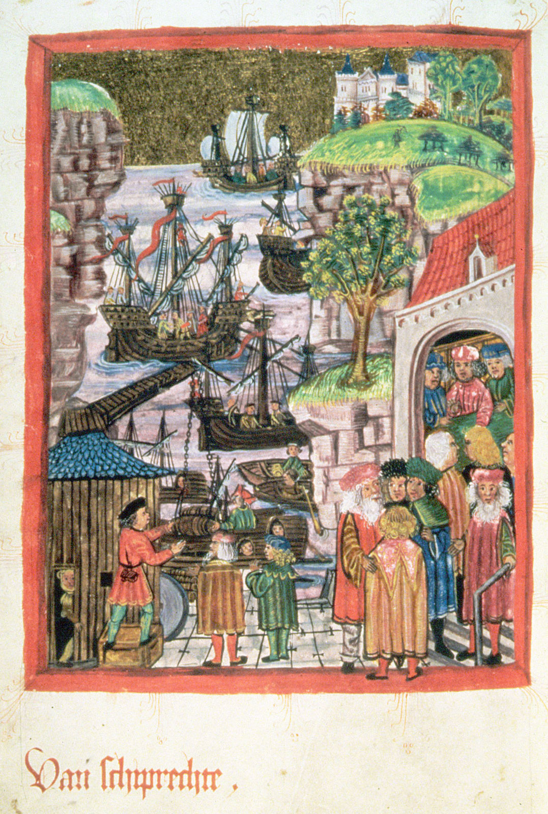
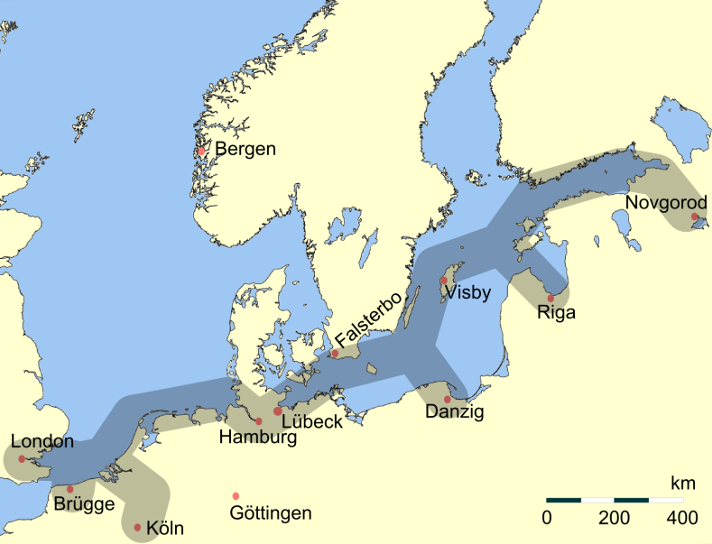
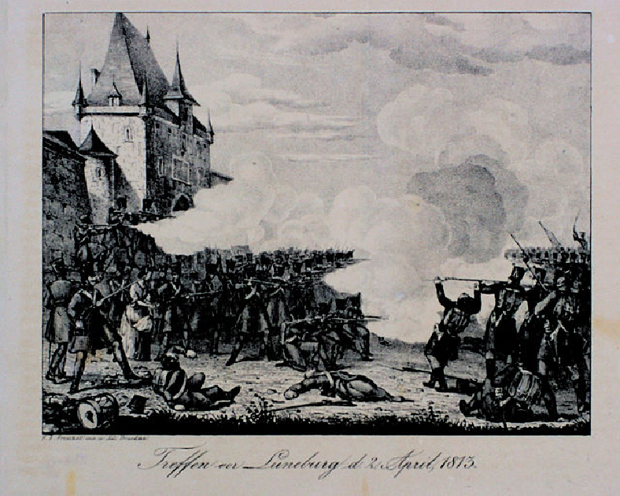
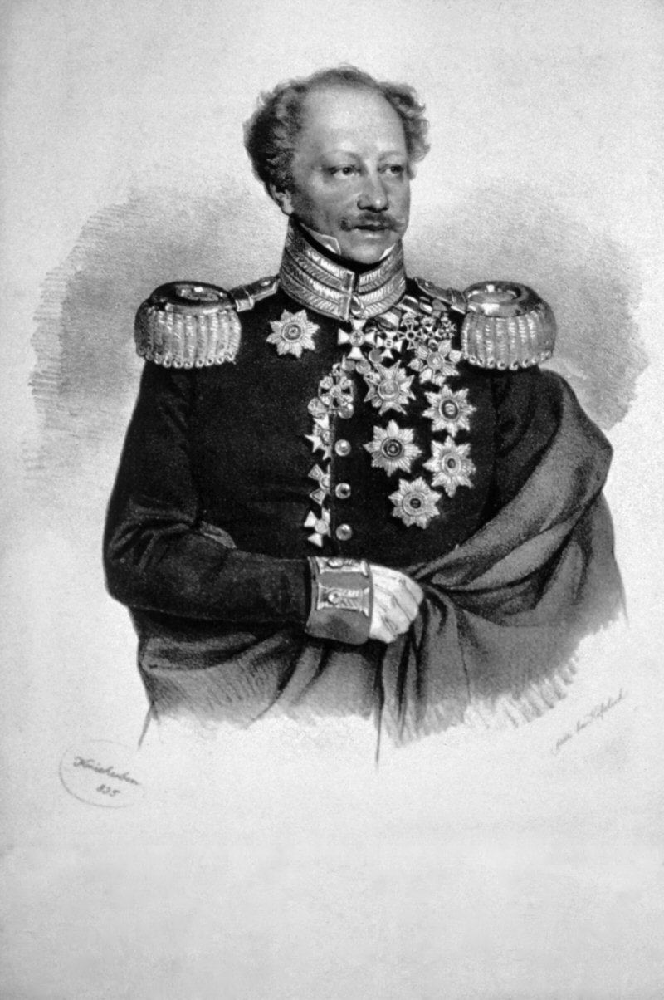
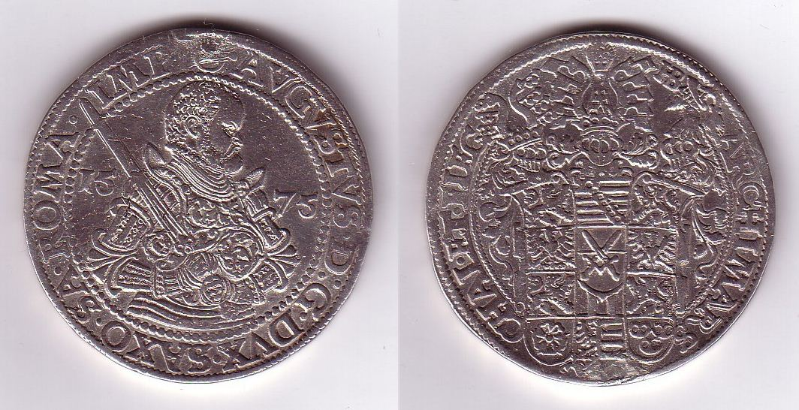

한자 동맹의 영광 - 함부르크를 둘러싼 소동
게시: 2022-07-18T06:30:10+09:00
나폴레옹은 3월초 마인 방면군의 편성에 열중하면서도 외젠에게 좀 지나치다 싶을 정도로 자주 편지를 보내며 함부르크의 중요성에 대해 두번 세번 반복했습니다. 외젠으로서는 귀에 딱지가 앉을 정도였습니다. 그러나 나폴레옹이 그토록 애지중지하던 함부르크는 어이가 없을 정도로 쉽게 프로이센-러시아 연합군의 손에 넘어가버렸고, 당연히 나폴레옹은 크게 노발대발했습니다. 다소 나중의 일입니다만, 나폴레옹이 마인 방면군을 이끌고 진격을 시작할 때 다시 외젠에게 편지를 보내 강조한 이번 작전의 2가지 1차 목표는 잘러(Saale) 강 방어선의 확보와 함부르크의 탈환일 정도로 나폴레옹은 함부르크를 중요시했습니다. 함부르크는 훨씬 나중인 5월 30일, 작센에서의 패배를 접한 연합군이 스스로 함부르크에서 철수하면서 다시 나폴레옹의 손아귀에 들어갑니다만, 대체 나폴레옹은 왜 그렇게 함부르크에 열을 올렸을까요? 생각해보면 나폴레옹의 화려한 이력서 중에 함부르크 이야기는 거의 없었던 것 같은데 말입니다. 사실 함부르크의 중요성은 누구보다도 영국이 잘 알고 있었습니다. 전에도 언급했지만, 영국은 4월 초 스튜어트(Charles William Stewart) 장군을 주 프로이센에 영국 대사로 임명하여 드레스덴으로 보냅니다. 이 대사 파견은 3월 20일, 프리드리히 빌헬름이 나폴레옹의 대륙봉쇄령을 공식적으로 파기하면서 비로소 시작되었는데, 프로이센이 대륙봉쇄령 파기를 선언한 것도 3월 18일 함부르크를 손에 넣었기 때문에 의미를 가지게 된 것입니다. 당시 함부르크는 북부 독일 전체의 정치와 경제는 물론이고 엘베 강 하구의 다리를 가진 도시라는 측면에서 군사적으로도 매우 중요한 도시였고, 사람과 물자가 모이는 곳이다보니 각종 정보 교환이 이루어지는 통신 허브이기도 했습니다. 함부르크는 1189년 신성로마제국 황제 프리드리히 1세로부터 자유도시이자 면세항구라는 칙령을 받아낸 이후 경제적으로 번영하기 시작하여 13세기부터는 북해 및 발트 해의 주요 항구 도시들과 한자(Hanse, Hansa) 동맹을 맺고 중세의 암울한 시기에도 번영을 누렸습니다.

(함부르크는 처음부터 영국과 관계가 깊었습니다. 한자라는 단어도 함부르크가 1266년 영국 헨리 3세와의 계약서에 hanse라는 단어가 사용된 것이 처음이라고 합니다. 윗 그림은 한자 동맹의 시발점이 된 함부르크와 뤼벡(Lübeck)의 1241년 동맹 체결을 묘사한 것입니다.) 함부르크의 중요성은 영국이 카리브해와 인도양 무역을 거의 독점하고 거기에 덧붙여 산업혁명에 들어서면서 더욱 커졌고, 그 결과 18세기 말경에는 좀 과장을 섞어 유럽 대륙 절반이 함부르크의 경제권 아래에 있다고 할 정도의 번영을 누렸습니다. 내륙 교통이 그다지 발달하지 않았던 시절이었으므로, 영국에서 프랑스 쪽으로 들어가는 화물은 네덜란드가 상당량을 처리했지만 독일로 들어가는 화물은 함부르크가 대부분 소화했던 것입니다. 그래서 지금도 함부르크는 유럽 대륙에서 로테르담(Rotterdam)과 안트베르펜(Antwerp, Antwerpen)에 이어 3번째로 큰 항구입니다. 함부르크는 또한 베를린에 이어 독일에서 2번째로 큰 도시이고 유럽 전역에서도 7번째로 큰 도시인데, 수도가 아닌 도시로서는 유럽에서 가장 큰 도시입니다. 나폴레옹 당시 함부르크 인구는 약 13만이었는데, 당시 파리의 인구가 70만이었고 베를린의 인구도 17만에 불과했습니다. 그때나 지금이나 함부르크는 진짜 대도시였습니다.

(한자 동맹의 주요 무역항로입니다. 함부르크가 그야말로 알짜배기 위치를 차지하고 있는 것을 보실 수 있습니다.) 경제적 번영은 자유로운 무역에서 오는 것이고, 또 그 결과로 시민계급의 성장을 반드시 낳게 됩니다. 당연히 함부르크도 왕과 귀족들이 신분제 질서를 지켜려고 폭압적인 통치를 하는 곳이 아니었고, 오히려 15세기 초부터 헌법 비슷한 것을 가지고 있을 정도로 선진적인 도시였습니다. 그렇다보니 신분제 질서를 깨뜨리는 프랑스 혁명과 나폴레옹에 대해 함부르크는 좋은 감정을 가지고 있었을까요? 전혀 그렇지 않았습니다! 나폴레옹은 1810년 네덜란드를 병합한 것에 이어 함부르크를 포함한 북해에 접한 독일 해안 지역을 모조리 프랑스로 강제 편입시켜버렸습니다. 그게 나쁜 것이었는가 하면 꼭 그렇지는 않았습니다. 나폴레옹의 통치는 언제나 근대적인 나폴레옹 법전을 앞세우며 들어왔으므로 자치적이지만 중세적인 질서를 지켜오던 함부르크에게는 근대화의 계기가 될 수도 있었습니다. 하지만 나폴레옹의 통치는 필연적으로 대륙봉쇄령과 공포의 징집제도 함께 몰고 들어왔습니다. 프랑스 영토가 되기 전부터 대륙봉쇄령으로 인해 많은 회사가 문을 닫고 실업자가 늘어나던 함부르크는 협상을 통해 함부르크 시민들에게는 자체 방어를 위한 도시 근위대 외에는 징집제를 적용하지 않는다는 특혜를 얻어냈습니다. 그러나 프랑스의 영토이건 자유도시이건 대륙봉쇄령에 대해서는 어떻게 할 방법이 없었습니다. 프랑스 영토가 된 함부르크는 이제 프랑스와의 교역에 있어서는 관세를 물지 않게 되었다는 점이 좋아졌지만, 네덜란드와는 달리 어차피 프랑스와는 거리가 멀어 교역량이 많지는 않았으므로 뾰족하게 좋아진 점도 없었습니다. 나폴레옹도 그런 점을 잘 알고 있었고, 나름대로 영국 없이도 함부르크가 번영할 수 있는 방안을 구상하기도 했습니다. 가령 함부르크가 접한 엘베 강과 라인 강을 운하로 연결하고, 궁극적으로는 파리와 함부르크 사이까지도 연결한다는 공상 과학 소설에 가까운 계획을 짜기도 했습니다. 그러나 그런 비현실적인 희망 사항이 당장 돈이 되지는 않았고, 그래서 함부르크에서는 반프랑스 정서가 매우 심했습니다. 나폴레옹이 이렇게 심각한 반프랑스 정서에도 불구하고 굳이 함부르크를 강제 병합한 것은 물론 대륙봉쇄령을 철저히 실행하기 위한 것도 있었습니다만, 당장 돈이 되었기 때문이었습니다. 비록 영국과의 교역은 끊겼다고 하더라도, 함부르크는 여전히 스웨덴과 폴란드, 러시아 등과 활발한 교역을 하고 있었을 뿐만 아니라 북부 독일 전체의 거대 시장 역할을 하고 있었습니다. 당시엔 소득세라는 것이 없었으므로, 토지나 건물 같은 것에 매기는 재산세와 함께 상품 거래에 매기는 거래세가 주요 세금이었습니다. 그런데 1년 내내 활발히 상품 거래가 일어나는 함부르크는 그야말로 황금알을 낳는 거위였을 것입니다. 3월 중순에 함부르크를 상실한 뒤에 나폴레옹이 외젠에게 보낸 편지를 보면 '함부르크를 잃으면서 나는 수백만 프랑의 손해를 보게 되었다'라며 화를 내는 장면이 나오는데, 가뜩이나 전비 마련에 골머리를 앓던 나폴레옹에게는 그런 재원 상실이 꽤 심각한 문제였을 것입니다. 이렇게 애지중지하던 함부르크가 왜 어이없이 러시아군 손에 넘어갔는가 하면, 역설적으로 나폴레옹이 너무 애지중지했기 때문이었습니다. 당시 함부르크에는 생시르(Claude Carra St. Cyr) 장군이 고작 1천명의 병력으로 지키고 있었는데, 대신 상품 거래를 매의 눈으로 감시하며 세금을 거두던 무장 세금 징수원이 무려 1,500명 이상 있었습니다. 문제는 (당연히) 세금 징수원들이 그야말로 함부르크 시민들의 증오를 받고 있었다는 점이었습니다. 나폴레옹의 러시아 원정군이 참패를 겪고 소수의 생존자들만 누더기 차림으로 돌아오고 있다는 흉흉한 소문이 사실로 확인되고 있을 즈음이던 2월 24일, 함부르크 시내에는 큰 소요가 발생했습니다. 당장 부족한 병력을 메우기 위해 프랑스 당국은 함부르크 명문가 자제들로 이루어진 도시 근위대로 하여금 나폴레옹의 황실 근위대로 복무하도록 명령을 내린 바 있었습니다. 이는 함부르크 이외 지역에서의 복무에 함부르크 시민들을 징집하지 않겠다는 기존 약속을 깨는 조치였습니다. 그런데, 가뜩이나 불만이 가득한 채로 집결하여 길을 떠나려던 젊은 함부르크 근위대원들에게 세금 징수원들이 강압적으로 수중에 지닌 돈을 다 내놓고 가라는 부당한 요구를 했습니다. 이건 부유한 함부르크 시민들로부터 단물을 쪽쪽 빨려던 탐관오리들의 부정 행위였는데, 그것도 때와 장소를 잘 골라야 했습니다. 여기서 벌어진 소요 사태는 곧 항구와 시내로도 번져서 시민들은 돌을 던지며 세금 징수원들을 공격했습니다. 세금 징수원들도 발포하며 폭동을 진압하려 했으나 세관과 경찰서, 징수 초소 등이 파괴되었고 나폴레옹이 하사한 독수리가 달린 군기도 땅에 내던져저 폭도들의 발에 짓밟혔습니다. 2월 말의 이 소요 사태는 생 시르의 정규 보병연대가 출동하면서 일단 진압되었으나 프랑스 정규군이 주둔하고 있지 않던 주변 도시들, 즉 뤼벡(Lübeck)와 뤼네부르크(Lüneburg) 등에서도 소요 사태가 벌어졌습니다. 여기에 더해 러시아군의 선봉대인 코삭 기병대가 함부르크 일대에 나타나고 함부르크 북동쪽 스웨덴령 포메라니아의 슈트랄준트(Stralsund)에 주둔하고 있던 모랑(Joseph Morand) 장군의 병력 2500명도 철수하자, 생 시르도 용기를 잃고 그만 함부르크에서 남서쪽의 브레멘(Bremen)으로 철수해버리고 말았습니다.
(조셉 모랑입니다. 모랑 장군이라고 하면 다부 밑에서 언제나 좋은 활약을 보여주던, 나폴레옹보다 2살 어리던 Charles Antoine Morand을 생각하기 쉽습니다만, 여기서의 모랑 장군은 나폴레옹보다 12살 더 많은 유명하지 않은 사람입니다. 그는 나폴레옹이 젊은 시절 이탈리아 전선에서 싸울 때 그 밑에 잠깐 있기도 했으나 별로 인상적인 활약을 보여주지는 못했는지 한직에 배치되었습니다. 특이한 점은 나폴레옹의 고향인 코르시카 아작시오에 배치되어 그 일대의 반프랑스 봉기를 무자비하게 진압했다는 것입니다. 그 잔혹함이 도에 지나쳐, 많은 이들이 그의 해임을 권고했지만 자신을 배척한 고향 사람들에 대해 악감정이 있던 나폴레옹은 그 해임을 거부했습니다.) 나폴레옹은 고작 코삭 200명에게 함부르크를 잃었다며 대노했습니다. 정말 한낱 코삭 200명에게 함부르크를 내준 것은 아니었고, 실제로는 테텐보른(Friedrich Karl von Tettenborn) 장군이 이끄는 1300명의 기병대가 러시아군의 선봉으로 엘베 강을 넘어 위협을 가했기 때문이었습니다. 나폴레옹은 그 1500명의 세금 징수원들을 싹 데리고 가서 함부르크를 탈환하라고 강압했지만, 정작 생 시르는 브레멘 및 그 일대에서도 일어난 반프랑스 폭동으로 어쩔 줄 몰라하는 상황이었습니다. 나폴레옹의 이런 섣부른 닥달은 결국 러시아군과 맞붙은 4월 2일 뤼네부르크 전투에서 모랑 장군이 패배하고 전사하는 사달이 났을 뿐이었습니다.

(1813년 4월 2일 뤼네부르크 전투입니다. 이 전투에서 약 2800명의 작센 출신의 독일어를 쓰는 프랑스군이 3100명의 프로이센-러시아 연합군과 싸웠는데, 가장 큰 차이는 프랑스군은 사실상 모두 보병인 것에 비해 연합군 3100 중 2천 정도는 기병대였다는 점입니다. 그로 인해 사상자 수는 양측이 각각 5백, 3백 정도로 큰 차이가 나지는 않았으나, 싸움에 패배한 프랑스군은 대부분 탈출하지 못하고 연합군 기병대에게 포로가 되고 말았습니다. 이 전투에는 그 일대의 소요 사태를 잔혹하게 진압하던 모랑 장군에 대한 증오심으로 총을 들고 자발적으로 가담한 민간인들도 많았다고 합니다.) 나폴레옹이 함부르크의 상실에 화가 난 만큼 연합군은 함부르크를 거저 주운 것에 크게 기뻐했습니다. 테텐보른은 3월 18일 텅빈 함부르크에 주민들의 열렬한 환영을 받으며 입성했는데, 입성하자마자 그 일대의 주민들에게 동원령을 내리며 병력 충원에 나섰습니다. 프랑스군이 물러가자 인근 메클렌부르크-슈트렐리츠(Mecklenburg-Strelitz) 공국과 메클렌부르크-슈베린(Mecklenburg-Schwerin) 공국의 공작들은 각각 2천의 보병과 1천의 기병에 대해 동원령을 내려 연합군에 기여하겠다고 했고, 함부르크에 대해서도 5천 병력에 대해 동원령을 내렸습니다. 이런 동원령은 실제로는 큰 도움이 되지는 않았습니다. 애초에 남의 나라 전쟁에 아들 보내기 싫어서 폭동을 일으킨 도시들이었는데, 프로이센-러시아 연합군에게 총알받이로 아들들을 보내는 것도 기쁘지는 않았을테니까요. 또한, 연합군은 뤼벡에서는 6천 탈러(Reichsthaler), 함부르크에서는 2백만 탈러의 군자금을 징수할 계획을 세웠습니다. 연합군이 그 금액을 실제로 징수했는지는 모르겠습니다만, 5월 함부르크를 다시 점령한 뒤에 다부는 함부르크 시 당국으로부터 4천8백만 프랑을 징수했을 뿐만 아니라 함부르크 은행 금고에 보관되어 있던 은괴도 모조리 압수했습니다.

(함부르크를 무혈점령한 테텐보른(Friedrich Karl von Tettenborn) 장군입니다. 함부르크 시민들로서는 오스트리아 태생의 러시아군 장군인 이 양반이 함부르크를 점령한 것이 크게 불운한 일이었습니다. 프랑스군은 공적으로 함부르크를 수탈했지만 이 양반은 공적으로는 물론 사적으로도 수탈했습니다. 다부에게 쫓겨나기 전 딱 2달 동안, 테텐보른은 5천 프리드리히 금화(Friedrich d'or)를 착복했다고 합니다. 그는 전쟁이 끝난 뒤 1818년에 러시아를 떠나 바덴에서 살다가 결국은 고향인 오스트리아로 돌아와 1845년까지 잘 살다 죽었습니다.)

(북부 독일에서 많이 사용되던 은화인 왕국 은화, 즉 라익스탈러(Reichsthaler)입니다. 사진은 1575년 작센 선제후가 드레스덴 주조소에서 찍어낸 라익스탈러입니다. 시대에 따라 이 은화에 들어간 은의 무게는 다릅니다만, 18세기 이후 주조된 라익스탈러에는 17.5392g의 은이 들어 있었습니다. 현재 은 1g 가격이 $0.68 USD이니까, 1탈러는 약 11.9달러이고, 함부르크에 부과된 2백만 탈러는 우리 돈으로 약 306억원 정도가 됩니다. 요즘 경제 개념으로는 별 것 아닌 금액 같지만, 당시 306억원이면 프랑스 정규군 약 6,200명, 그러니까 1개 여단 규모의 병력을 완전무장시킬 수 있는 거액이었습니다.) 특히 함부르크는 북해의 대형 항구로서, 제해권을 장악한 영국과 협업이 잘 될 경우 무한한 군사적 기동성을 제공할 수 있는 곳이었습니다. 실제로 함부르크가 연합군 손에 넘어가자마자 함부르크의 지척이자 엘베 강 입구의 작은 마을인 쿡스하픈(Cuxhaven)에 영국군 500명이 상륙했는데, 함부르크가 프랑스군 손에 있었다면 어림도 없었을 일이었습니다. 당시 샤른호스트의 복장을 터뜨릴 정도로 러시아군 본대의 진격이 지지부진했던 이유는 러시아 본토에서 오는 증원군의 이동 속도가 느렸기 때문이었는데, 아예 페체르부르크나 쾨니히스베르크 등에서 선박편으로 병력과 물자를 수송할 경우 병력 이동은 물론이고 보급 문제도 쉽게 해결이 가능했습니다. 그러나 이 모든 가능성은 결국 다 가능성으로 끝나버리고 말았습니다. 일단 영국은 이미 스페인 전선에 거의 전력을 쏟아붓고 있었기 때문에 상륙시킬 병력이 불과 5백에 불과했고, 참전할 듯 말듯 연합군의 애를 태우던 스웨덴군도 약삭바른 베르나도트의 계산에 따라 병력 투입을 미루고 있었습니다. 그리고 러시아와 영국이 해로를 통한 작전 계획을 짜기도 전에, 함부르크 함락 불과 2달 만인 5월 말 무시무시한 다부 원수가 병력을 이끌고 쳐들어오자 프로이센-러시아 연합군은 재빨리 퇴각했기 때문이었습니다. 다부는 그 이후에도 계속 함부르크의 수비에 집중하게 되는데, 유능한 지휘관에 목말라 하던 나폴레옹이 자신의 에이스라고 할 수 있는 다부를 함부르크에 박아놓았다는 것만 봐도, 나폴레옹이 얼마나 함부르크를 중시했는지 알 수 있습니다. 다만, 함부르크에서는 전체 전황을 좌우하는 대전투가 벌어지지는 않았습니다. 나폴레옹은 원래 러시아군의 진격을 무시한 채, 함부르크를 거치는 북부 독일 해안 경로를 이용하여 폴란드 비스와 강하구까지 내달린 뒤 러시아군의 후방 보급로를 차단하는 것을 기본 작전으로 했습니다. 그러나, 프로이센이 배신을 하고 연합군이 예상보다 훨씬 빨리 엘베 강을 건너 라이프치히를 점령하자 그 전선을 무시할 수가 없었습니다. 그는 결국 마인츠(Mainz)로 향합니다. ** 다음 주에는 한풀 쉬고 가는 셈치고, 나폴레옹이 함부르크의 음식에 끼친 작은 영향에 대해 짧게 다룹니다. 많이 읽어세요. Source : The Life of Napoleon Bonaparte, by William Milligan Sloane Napoleon and the Struggle for Germany, by Leggiere, Michael V
https://en.wikipedia.org/wiki/Hamburg https://en.wikipedia.org/wiki/Hanseatic_League https://www.britannica.com/place/Hamburg-Germany/Evolution-of-the-modern-city https://en.wikipedia.org/wiki/Reichsthaler https://en.wikipedia.org/wiki/Friedrich_Karl_von_Tettenborn https://second.wiki/wiki/gefecht_bei_lc3bcneburg https://second.wiki/wiki/joseph_morand